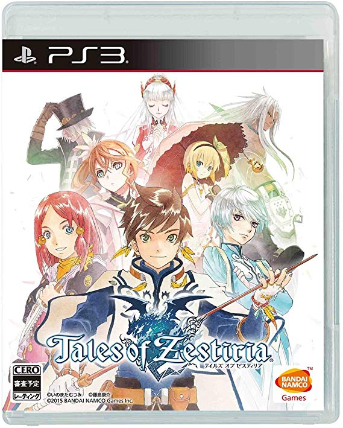

テイルズオブゼスティリア
 2015年1月22日発売プラットフォーム：PS3 , PS4 , Win
シリーズ第15作目。
本作の戦闘は敵と接触した場所がそのまま戦闘フィールドとなるシームレスバトルシステムが採用されている。戦闘専用のフィールドに切り替わることなく戦闘が行えるため、臨場感を味わえる、ロードがほぼない等の利点があるが、場所によっては壁や柱に邪魔されて視界が悪くなり、悪条件の中戦闘を行わなければならなくなる状況に陥ることがあるなど、欠点もある。
本作はストーリーや地名などに「アーサー王伝説」をモチーフとしたものが散見される（次作『テイルズオブベルセリア』も同様）。